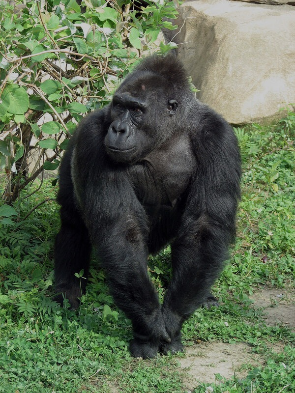
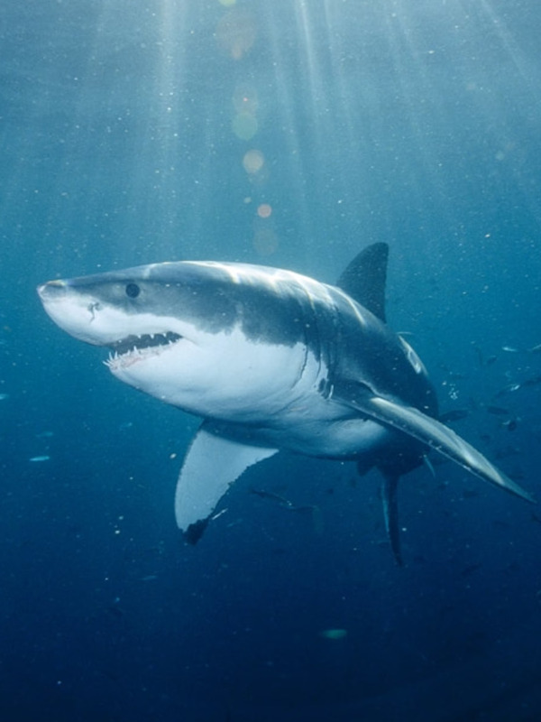
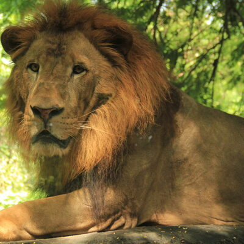
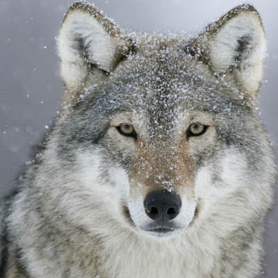
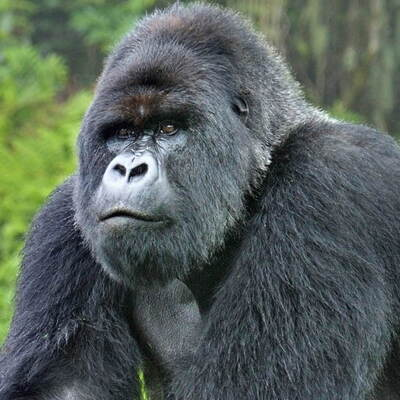
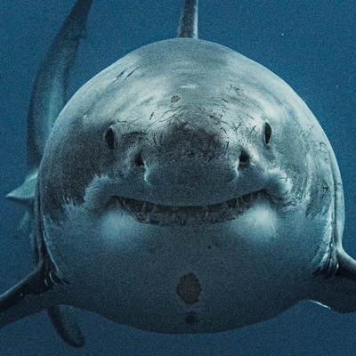
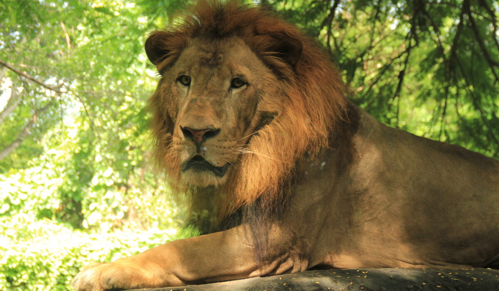
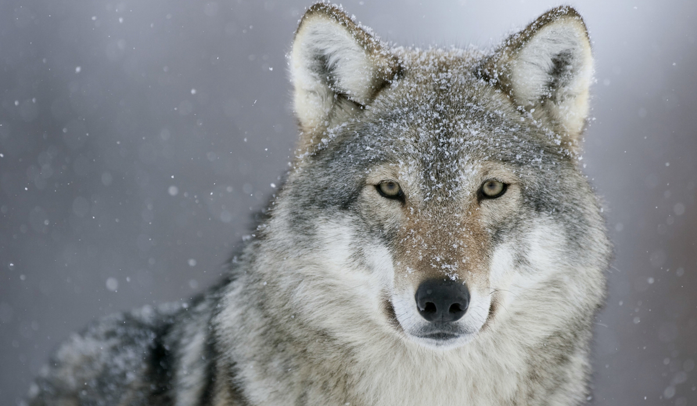
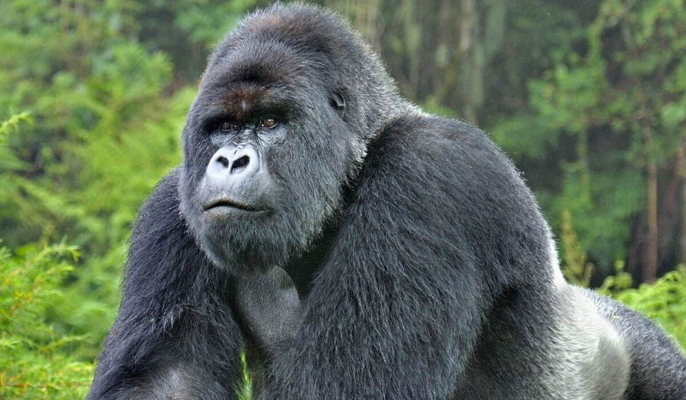
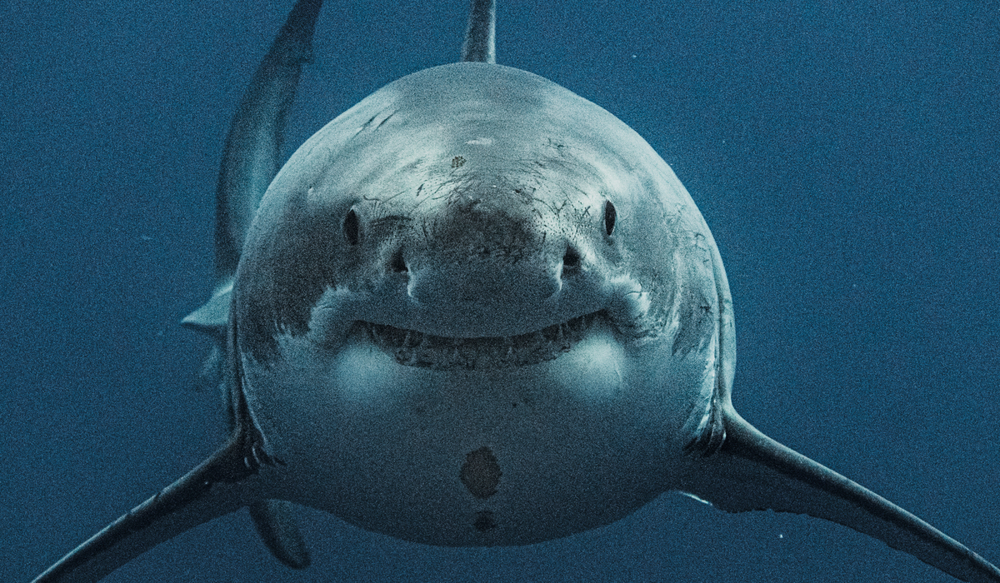

Incredible Beasts


- 
- 
FOX
Foxes are mammalian and omnivorous animals belonging to the Canidae family. They are medium-sized vulpids, characterized by a long snout and a long, bushy tail.
These cute animals are found in all mainland states and territories. They have also been reported to occur in Tasmania.
Out of 40 recognized fox species, only 12 belong to the "true fox" genus Vulpes, of which the red fox is the most common.
They also feature their oval pupils, similar to the vertical pupils of felines.
LION
Lions are iconic animals that have powerful bodies—in the cat family, they’re second in size only to tigers—and roars that can be heard from five miles away.
They are the only cats that live in groups, which are called prides—though there is one population of solitary lions.
Lions hunt for food every few days. After the hunt, the group effort often degenerates to squabbling over the sharing of the kill, with cubs at the bottom of the pecking order.
These lions mainly stick to the grasslands, scrub, or open woodlands where they can more easily hunt their prey, but they can live in most habitats aside from tropical rainforests and deserts.
BEAR
Bears are generally large Mammals which are classified as Caniforms which means Dog like Carnivores.
They can be traced back to their pedigree whhich were the Miacids, small, snouted, weasel-like animals that lived 50 million years ago.
Modern Bears are characterised with large body and stocky legs, a long snout, shaggy hair, plantigrade paws with five non-retractile claws and a short tail.
Bears are typically solitary and generally diurnal, though they can be active during the night (nocturnal) or twilight (crepuscular), depending on the food availability.
WOLF
Wolves are very intelligent creatures whose upright ears, sharp teeth, pointed muzzles, inquiring eyes and other facial features instantly convey this quality.
The weight and size of a wolf can vary greatly worldwide. In general, height varies from 0.6 to .95 metres (26 – 38 inches) at the shoulder and weight ranges from 20 to 62 kilograms.
Their cubs stay with them until they are old enough to leave home, usually by the time they are 3 years old and conditions are right to start a family or pack of their own.
Wolves bodies are built for stamina, possessing features ideal for long distance travel.
GORILLA
Gorillas are mostly herbivores, which means they only eat plants – up to 30kg of them per day! However, some subspecies have been known to eat insects and snails, too.
They spend a lot of time moving around their habitat in family groups known as ‘troops’. Each troop can contain up to 30 gorillas!
The gorilla is active during the day (diurnal) and primarily terrestrial, usually walking about on all four limbs with part of its weight supported on the knuckles of its hands.
Cognitively, gorillas lack the curiosity and adaptability of chimpanzees, but gorillas are calmer and more persistent.
WHITE SHARK
White sharks are large bulky fishes with a body shaped like a blunt torpedo. They have a sharply pointed conical snout, large pectoral and dorsal fins, and a strong crescent-shaped tail.
They have a contrasting pattern of dark blue, gray, or brown on their back and sides. They are amazing hunters armed with strong muscles, good eyesight, and a keen sense of smell.
Sharks have a complex circulatory system that conserves heat generated through the contraction of swimming muscles.
White sharks are largely solitary, but some pairs have been seen to travel together and associate for long periods of time.
FAQ
- What is the habitat of these animals?
- All animals displayed in this site are wild animals and so shouldn't be approached by humans with proper care, except for the ones in the zoo, or in case of the White Shark, in the Monterey Bay Aquarium, which is the only aquarium that has captured a White Shark.
- Why are they incredible?
- Each animal is incredible in their own way, with different characteristics and skills that make them unique in their singularity.
- What is the difference from one to another?
- There are various differences between them, but to mention some, mostly they range in their habitats, what they eat, how they hunt for their food, how they behave, for example, in groups or better alone. Each of these animals are important in the nature.
- How to protect ourselves from them?
- The best way to protect ourselves is not being near them in the first place, so knowing your location is the best advice, but if you encounter one of these animals, don't try making sudden movements or facing them, otherwise you could be their next prey.

- 

- 
- 
- 

- 

- 
- 
- 
Beasts
Left
CONTACT
- marcoscarvalhodev99@gmail.com
- +55 (11) 99999-9999
- São Paulo, Brazil
- Donate 0 bitcoin to help us
- Monday to Friday - 8 to 6